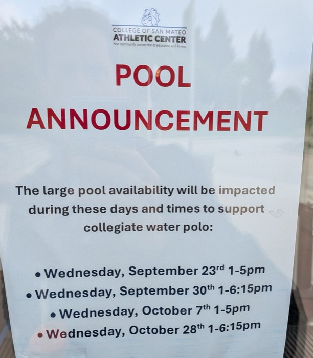

Aquatics
Aquatics at College of San Mateo Athletic Center
Discover the ultimate aquatics experience at College of San Mateo Athletic Center! Choose from two pristine lap pools and a wide range of swim programs for all ages and abilities, including our Bulldog Swim Club, Bulldogs Swim School, and San Mateo Masters Swimming. Our instructors, deck monitors and lifeguards are dedicated to giving you the best possible swim experience.
Which lanes are open
LiveToday in the Olympic Pool, lane by lane. A lane marked Lap Swim is open to members. Switch to the Instructional Pool with the Pools menu, or step to another day with the arrows.
This replaces the Fall lane availability sheet (PDF, effective 9/11/2026). Lane availability is subject to change, and when it does, this calendar changes with it.

A notice on the front door is a notice nobody reads at home
This announcement was posted only on paper, on the Athletic Center's entrance. It isn't on the website or in the lane sheet, so a member who plans their swim from home finds out at the door.
In Pool Relay the four Wednesdays are on the calendar: Collegiate Water Polo holds the Olympic Pool from 1:00 to 5:00 PM on 9/23 and 10/7, and to 6:15 PM on 9/30 and 10/28. They show in every view of the pool on this site, and members following Lap Swim are emailed when it changes. Open Wednesday, October 28 in the calendar above to see it.
Lap swim this week
LiveEvery hour of open lap lanes in both pools, with the number of lanes. Tap Subscribe to add lap swim to your phone's calendar.
| When | Pool | June sheet | Fall sheet |
|---|---|---|---|
| Mon–Thu 2–4 PM | Olympic | 10 lap lanes | 2 lap lanes |
| Fri 2–4 PM | Olympic | 8 lap lanes | 2 lap lanes |
| Mon & Wed 10 AM | Olympic | 9 lap lanes | 3 lap lanes |
| Fri 10 AM | Olympic | 20 lap lanes | 14 lap lanes |
| Mon, Wed & Fri 10 AM | Instructional | 6 lap lanes | Closed |
| Tue & Thu 7 PM | Olympic | 19 lap lanes | 20 lap lanes |
San Mateo Masters
San Mateo Masters is a U.S. Masters Swimming (USMS) team with swimmers ranging from ages 18 to 95, recognized as the first Masters Swim Team in the United States. Experience in competitive swimming is not necessary: we provide structured group workouts, motivation, stroke advice and camaraderie. Questions? Contact Head Coach Tom Reudy at reudyt@smccd.edu.
Masters practices this week
LiveMonday Distance, Tuesday Stroke Work, Wednesday Quality, Thursday Middle Distance, Friday Individual Medley, and Saturday's long course Mid-Long Distance Free. Each block shows how many lanes Masters has.
Masters lanes are our estimate: the lane sheet gives the number of lap lanes each hour, and Masters is placed on the lanes that remain.
Aquatics staff
Our highly trained staff are Red Cross certified, with backgrounds in collegiate and age-group swimming, triathlon, open water and Masters swimming. Interested in joining the team? Send inquiries to bulldogs.ss@smccd.edu.
Contact us / scheduling
Call the Aquatics Office at (650) 378-7383 or email bulldogs.ss@smccd.edu.